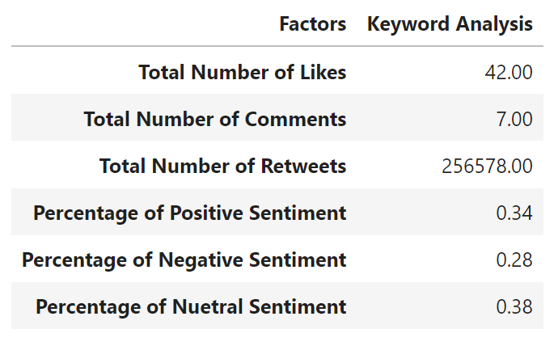
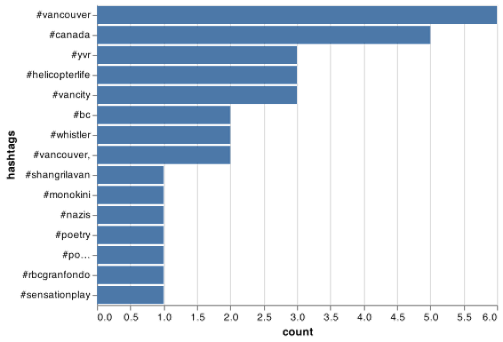

- Authors: Mahsa Sarafrazi, Shiva Shankar Jena, Amir Shojakhani, Mahmoodur Rahman
An R package to extract twitter data, analyzed and plot top occuring hashtags
Overview
The goal of rtweetlytics is to extract, analyze and plot twitter data. It provides functions to extract twitter data, clean tweets, analyze tweets and plot hashtags frequency.
Functions
| Function Name | Input | Output | Description |
|---|---|---|---|
| get_store() |
bearer_token, keyword, start_date, end_date
|
Dataframe | Extract twitter data and save as .csv
|
| clean_tweets() |
PATH, |
String | Cleans the text in the tweets and returns as new columns in the dataframe. The cleaning process includes converting into lower case, removal of punctuation, hastags and hastag counts. |
| analytics() | .csv |
Dataframe | Analyze the clean data frame extracted from twitter website, and returns a tibble including metrics of analytics. |
| plotting() |
.csv, col_text
|
Image | The plotting function creates a bar-chart plot of most occurring hashtags. |
Installation
The development version of rtweetlytics can be installed from GitHub with:
# install.packages("devtools")
devtools::install_github("UBC-MDS/rtweetlytics")Usage
you can read more about how to use the package in here
Features
The package is an assimilation of four independent functions:
get_store(): Extract data from twitter through calling API and provide csv file as output and create a dataframe.clean_tweets(): Cleans the text in the tweets and returns as new columns in the dataframe. The cleaning process includes converting into lower case, removal of punctuation, hastags and hastag counts.analytics(): Analyze the clean data frame extracted from twitter website, and returns a tibble including metrics of analytics.plotting(): The plotting function creates a bar-chart plot of most occurring hashtags.
Example
Load the library
library(rtweetlytics)1. Downloading data and creating dataframe
The first function in our library is the rtweetlytics::get_store(). This function will require tghe developer to obtain bearer token from the twitter API development website.
tweets = rtweetlytics::get_store(
bearer_token,
keyword="vancouver",
start_date="2022-01-12",
end_date="2022-01-17")
head(tweets)#> data.text
#> 1 RT @TrishKurralinga: @Ctl_Alt_Del @PCKJ3627 I am reading a number of teachers are pulling the pin to ensure they don’t bring Omicron home f…
#> 2 As Omicron Crests, Booster Shots Are Keeping Americans Out of Hospitals https://t.co/ms03kYYNO8
#> data.author_id data.referenced_tweets data.lang
#> 1 2.996786e+09 list(type = "retweeted", id = "1484905705740333059") en
#> 2 1.297973e+18 NULL en
#> data.id data.created_at data.source data.reply_settings
#> 1 1.48504e+18 2022-01-22T23:59:59.000Z Twitter for iPhone everyone
#> 2 1.48504e+18 2022-01-22T23:59:59.000Z WordPress.com everyone
#> data.conversation_id data.in_reply_to_user_id
#> 1 1.48504e+18 NA
#> 2 1.48504e+18 NA
#> data.public_metrics.retweet_count data.public_metrics.reply_count
#> 1 7 0
#> 2 0 0
#> data.public_metrics.like_count data.public_metrics.quote_count
#> 1 0 0
#> 2 0 02. Cleaning data
The second function in our library is the rtweetlytics::clean_tweets(). This function cleans the data to gets tweet texts, word counts.
PATH <- "../output/tweets_response.csv"
tweets_df <- rtweetlytics::clean_tweets(PATH, tokenization=TRUE, word_count=TRUE)
head(tweets_df)#> X source author_id created_at conversation_id lang
#> 1 1 Twitter Web App 282220986 2022-01-17 23:59:59 1.483228e+18 en
#> 2 2 Talon Android 932214247 2022-01-17 23:59:58 1.483228e+18 en
#> reply_settings referenced_tweets
#> 1 everyone [{'type': 'retweeted', 'id': '1483167691825418241'}]
#> 2 everyone [{'type': 'retweeted', 'id': '1482901087296311300'}]
#> id
#> 1 1.483228e+18
#> 2 1.483228e+18
#> text
#> 1 RT @MaximeBernier: Some mainstream media are finally recognizing that the covid hysteria has gone too far and are beginning to question it.…
#> 2 RT @DrJ56013122: I have yet to see a single research article convincingly showing that a booster reduces transmission or reduces the likeli…
#> in_reply_to_user_id retweetcount reply_count like_count quote_count
#> 1 NA 931 0 0 0
#> 2 NA 30 0 0 0
#> clean_tweets
#> 1 some mainstream media are finally recognizing that the covid hysteria has gone too far and are beginning to question it
#> 2 i have yet to see a single research article convincingly showing that a booster reduces transmission or reduces the likeli
#> clean_tokens
#> 1 some,mainstream,media,are,finally,recognizing,that,the,covid,hysteria,has,gone,too,far,and,are,beginning,to,question,it
#> 2 i,have,yet,to,see,a,single,research,article,convincingly,showing,that,a,booster,reduces,transmission,or,reduces,the,likeli
#> word_count
#> 1 20
#> 2 203. Analyzing data
Our third function rtweetlytics::analytic() analyses the data to give a resulting dataframe showing total Number of Likes, total Number of Comments, total Number of Retweets, percentage of Positive Sentiments, percentage of Neutral Sentiments, and percentage of Negative Sentiments.

4. Creating plot
In the last and final function we are using rtweetlytics::plotting() to further clean the data to extract hastags and plot the top 15 tags.
hash_plot <- rtweetlytics::plotting(tweets_df, text)
hash_plot
Contributors
The names of core development team is listed below.
| Name | GitHub Handle |
|---|---|
| Mahsa Sarafrazi | @mahsasarafrazi |
| Shiva Shankar Jena | @shivajena |
| Amir Shojakhani | @amirshoja |
| Mahmoodur Rahman | @mahm00d27 |
Please note that this project is released with a Code of Conduct. By contributing to this project, one implies to agree to abide by its terms.